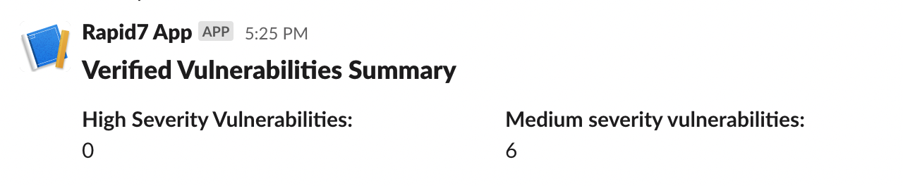

Automated Rapid7 reports with python
This blog post describes how to collect information from a popular DAST platform, create a simple report and share it with development teams using a popular collaboration platform like Slack.
Rapid7 is one of the biggest providers of cybersecurity services and the InsightAppsec module is a popular Dynamic Application Security Testing (DAST) tool which requires a proprietary license.
DAST tools are typically used to monitor production and/or testing environments for web application vulnerabilities. They can be deployed with relatively low effort, as DAST is usually a point-and-shoot solution. DAST enables emulation of non-sophisticated adversaries targeting your websites with web applications attacks and exploits. On the other hand, these tools typically produce many false positives and as a result, it might be problematic to integrate feedback from DAST tooling directly into CI/CD pipelines or dev way of working wihtout a triaging phase by the security team.
The goals of this blog post are to show how to:
- Integrate with a DAST solution through an API, in this case Rapid7's InsightAppsec API.
- Retrieve reports of verified vulnerabilities by the security team.
- Post a summary report to the main developer communication channel, which is Slack for the sake of this blog post.
Rapid7's API
Rapid7 provides an API to interact with the tool and perform actions such as start a scan, update a scan configuration, query for vulnerability information or even perform custom searches. For this blog post, we will use the /search API to create a custom search and retrieve vulnerabilities of High or Medium criticality, which have been verified/triaged as actual vulnerabilities. This way we reduce the number of false positives presented to developers and we create more reliable reports.
Following Rapid7's API documentation here, the search query is as follows:
(vulnerability.severity = 'MEDIUM' || vulnerability.severity = 'HIGH') && vulnerability.status = 'Verified'
The next step is to communicate with the API by using an HTTP client.
The python HTTP client
First we define a method to execute a search on Rapid7 and retrieve the information we need. Here is the sample code:
api_key = 'your API key'
base_url = 'https://YOUR_REGION.api.insight.rapid7.com/ias/v1'
def search_rapid7(query,type):
custom_headers = {'content-type': 'application/json', 'X-Api-Key' : api_key}
search_json={
"query" : query,
"type": type
}
r = requests.post(base_url+'/search',json=search_json,headers=custom_headers)
return json.loads(r.text)
Python code to search on Rapid7 API
The available options for query and type can be found here. For the purpose of this post, type is set to VULNERABILITY upon calling the search_rapid7 method as shown below. You will need your api key to authenticate your client (look for the X-Api-Key header). Please note that this code is for testing and presentation reasons. In a real scenario, make sure to use a vault to retrieve secrets in production or testing environments and avoid storing secrets in code.
You can now call the method search_rapid7 using the following code:
search_summary_critical_vulns = "(vulnerability.severity = 'MEDIUM' || vulnerability.severity = 'HIGH') && vulnerability.status = 'Verified'"
verified_vulns = search_rapid7(search_summary_critical_vulns,'VULNERABILITY')
Process the API response
search_rapid7 returns a json response object containing the response from rapid7. We will now process the json object and count Medium and High criticality vulnerabilities. Finally, the summary report will be posted in Slack. The approach will be very similar if you use Microsoft teams, other collaboration platforms or even if you simply want to save the report in a database or csv format.
The key takeaway here is that you choose a platform/tool which is considered part of the standard way of working. You want to avoid asking people to keep an eye on yet another place.
Having said that, here is the code for making a summary of vulnerabilities grouped by criticality:
def do_summary_verified(json_obj):
counter_high = 0
counter_medium = 0
for vulnerability in json_obj['data']:
if vulnerability['severity']=='MEDIUM':
counter_medium+=1
elif vulnerability['severity']=='HIGH':
counter_high+=1
return {
"high" : counter_high,
"medium" : counter_medium
}
Finally, here is the code to post results to Slack:
def post_summary_to_slack(json_obj):
webhook_url = 'your slack webhook api'
custom_headers = {'content-type': 'application/json'}
slack_post_message = {
"blocks": [
{
"type": "header",
"text": {
"type": "plain_text",
"text": "Verified Vulnerabilities Summary",
"emoji": True
}
},
{
"type": "section",
"fields": [
{
"type": "mrkdwn",
"text": "*High Severity Vulnerabilities:*\n"+str(json_obj['high'])
},
{
"type": "mrkdwn",
"text": "*Medium severity vulnerabilities:*\n"+str(json_obj['medium'])
}
]
},
]
}
r = requests.post(webhook_url,json=slack_post_message,headers=custom_headers)
The result in slack will look like this:

Summing up
This blog post describes how to collect information from a popular DAST platform, create a simple report and communicate it with development teams using a popular collaboration platform like Slack.
The same approach applies regardless of DAST solution, or collaboration platform. Key takeaways are - Do not overwhealm developers with information, only show verified and relevant findings. In this case, we showed the simple case of communicating verified vulnerabilities from the Rapid7 platform. - Do not ask people to log onto platforms outside their regular way of working and set of tools currently in use. Prefer to communicate findings in an automated way where the development teams would naturally expect communications. For this blog post, we assumed that the appropriate platform to share reports was Slack.
You can find all code, ready to be used as an AWS lambda function here.
I hope this was helpful!